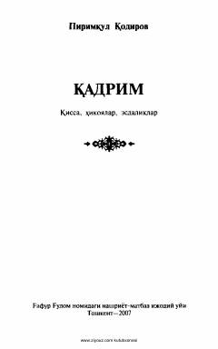

QMilliy g'urur, yoshlar muhabbati va mehnatkash insonlar taqdiriga bag'ishlangan qissa va hikoyalar to'plami.
Ushbu kitobga O'zbekiston xalq yozuvchisi Pirimqul Qodirovning «Qadrim» qissasi, hikoyalari va ustoz adiblar haqidagi xotiralari kiritilgan. Asarda milliy ishchi kadrlar taqdiri, yoshlarning jasorati va Muhobrat gaz konini ochish jarayonidagi hayotiy sinovlar tasvirlangan. Shuningdek, insoniylik, muhabbat va vatanparvarlik tuyg'ulari tarannum etilgan.